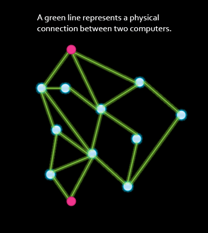
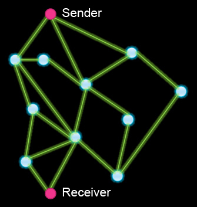

-
 Beschrijf wat er in deze animatie gebeurt.
Beschrijf wat er in deze animatie gebeurt.
Een redundant systeem heeft back-up elementen voor het geval een deel faalt.
Fout-tolerantie is het vermogen van een systeem om te blijven werken terwijl er fouten optreden.
Schaalbaarheid is het vermogen van het Internet om te blijven werken terwijl het (sterk) groeit.
- Work through the following questions.

Wat is in dit netwerkmodel het minimale aantal knopen (verbindingspunten) dat kan falen zodat de Zender en Ontvanger niet kunnen communiceren (Anders dan de Zender en Ontvanger zelf, natuurlijk.)
1
Geen enkele knoop is vitaal voor de werking van het systeem. Verwijder een willekeurige knoop, en je kunt nog steeds een pad vinden tussen Zender en Ontvanger.
2
Correct! If the node with 6 connections goes down and also either of the two to its left, the sender and receiver can't communicate.
3
Try to find a smaller number of nodes that can stop working and still break communication.
4
Try to find a smaller number of nodes that can stop working and still break communication.
5
Try to find a smaller number of nodes that can stop working and still break communication.
Wat is, in hetzelfde netwerkmodel, het maximale aantal knopen dat kan falen zonder de communicatie tussen de Zender en Ontvanger onmogelijk te maken?
10
If all 10 nodes fail, the sender and receiver can't communicate.
9
If 9 nodes fail, the sender and receiver can't communicate.
8
Correct! If the 4 nodes on the right and also the 4 nodes on the left all fail, the remaining 2 nodes in the middle will still allow the sender and receiver to communicate.
7
Try to find a higher number of nodes that can stop working and still ensure communication.
6
Try to find a higher number of nodes that can stop working and still ensure communication.